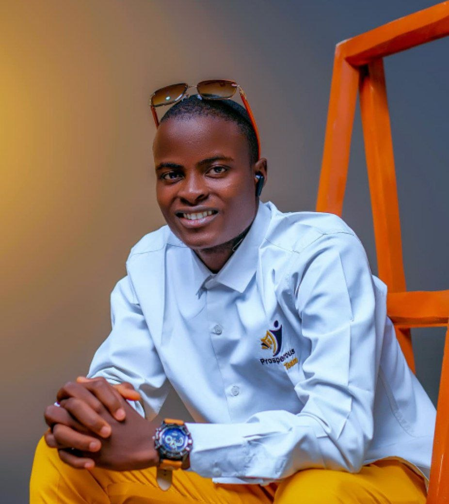

Hi, I’m Abdulsemiu Abdulsalam.
I’m a Software Engineering student with a strong interest in building thoughtful digital experiences through clean code, modern web design, and practical problem-solving. My goal is to turn ideas into reliable solutions that are both useful and meaningful.
A clear view of my academic journey
My journey into software engineering began with curiosity about how technology shapes everyday life. Today, as a student at MIVA Open University, I’m developing the skills needed to design, build, and improve digital solutions with confidence and purpose.
Through coursework, practical projects, and continuous learning, I’ve grown stronger in programming, web development, and software design. This portfolio reflects not only the work I’ve completed, but also the discipline and ambition I bring to every new challenge.
Quick Facts
- Program: B.Sc. Software Engineering
- Study level: First Year
- Focus: Web Development and Software Design
- Based in: Osun State, Nigeria
- Explore more on the About Me page